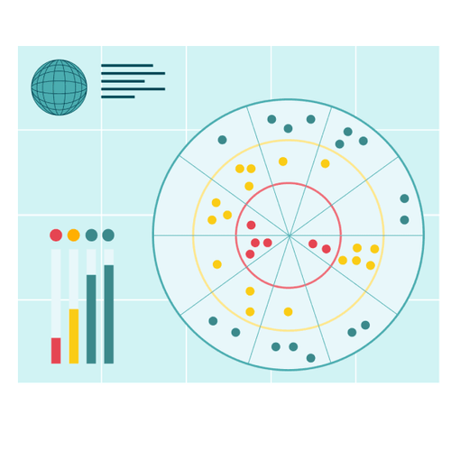

Mit der Academy erhaltet ihr im Business-Plan praxisnahe Lernmodule rund um Facilitation und wirksame Transformation.
Gemeinsam mit 9 Spaces zeigt Plan International Deutschland, wie wertebasiertes Arbeiten Orientierung gibt – nach innen wie nach außen.

Das Tool hilft euch beim Aufspüren von Spannungsfeldern im Team und leitet euch zu passenden Lösungen.
Dieses Tool hilft euch dabei, Eigenschaften, die ihr unbewusst ablehnt, aufzudecken und im Team damit umzugehen.
Mit diesem Tool findet ihr heraus, was euch bei der Arbeit antreibt und wie ihr mehr davon in euren Arbeitsalltag integrieren könnt.
Ein Tool, das dir dabei hilft, deine Beziehungen einzuordnen und zu erkennen, ob es Handlungsbedarf gibt.